—
An elementary form of agency at planetary-scale
Sergio Rubin · Live Keynote
Annual Symposium
2026-11-12 — 2026-11-13 · UTC
. Live public program — revision authority. For the live schedule, open its Sessions page.
Downloads & working-book guidance
In this snapshot: 2 abstracts pending. See the official program for revisions.
The research
Full abstracts from the approved program. Open a presentation to read and explore its sources. Missing abstracts are marked pending.
All search words must match; word order does not matter.
No matches. Try fewer words or reset the filters.
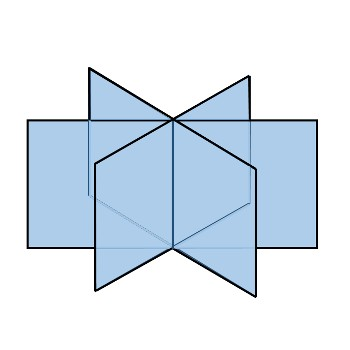
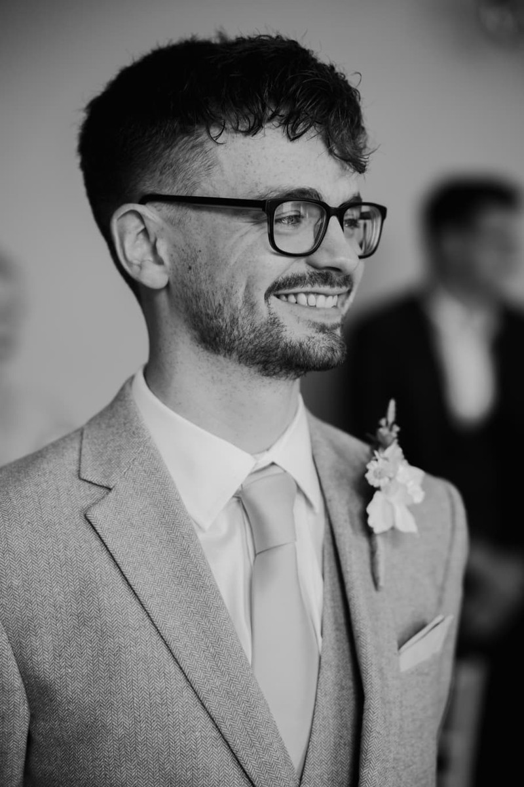
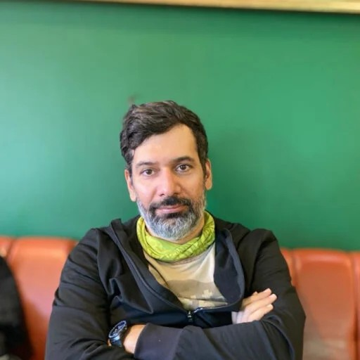
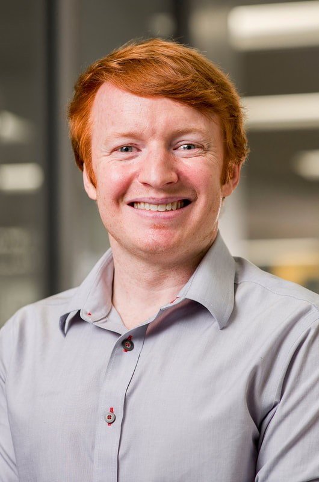
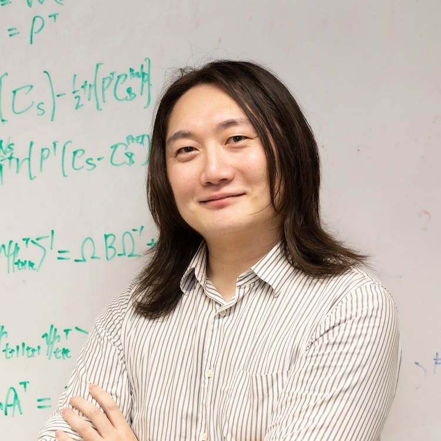
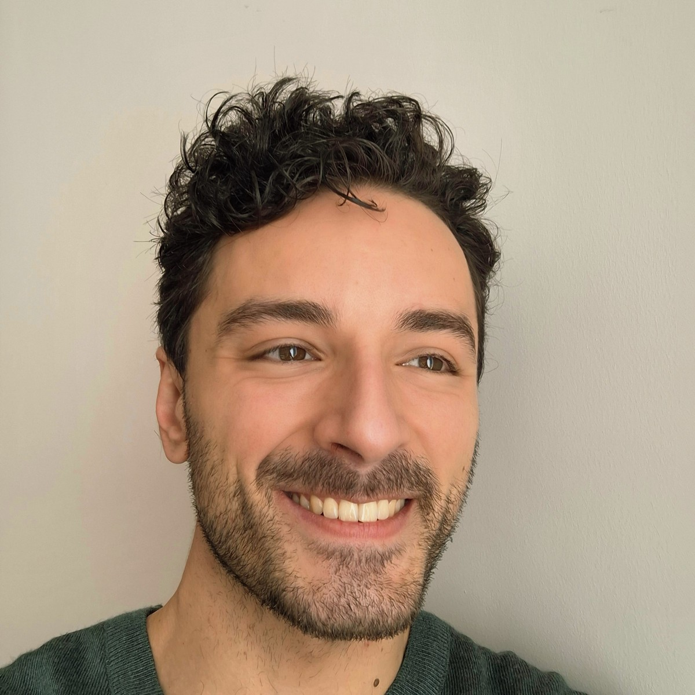
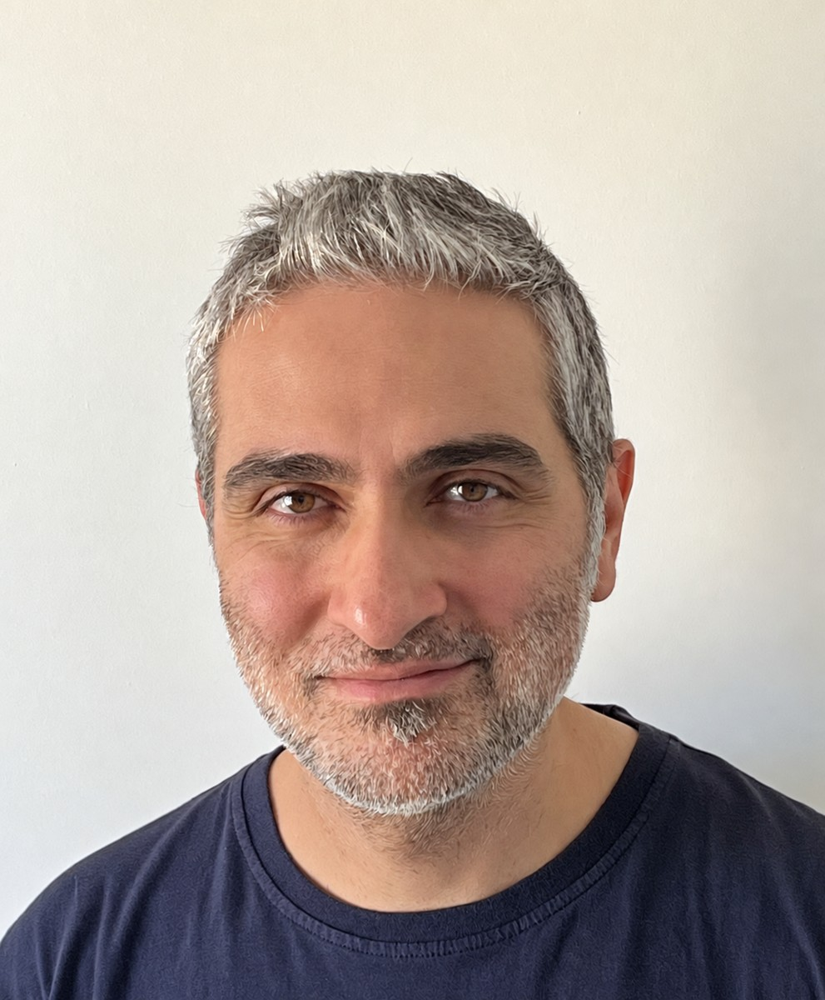
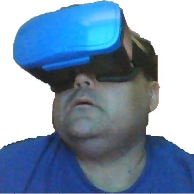
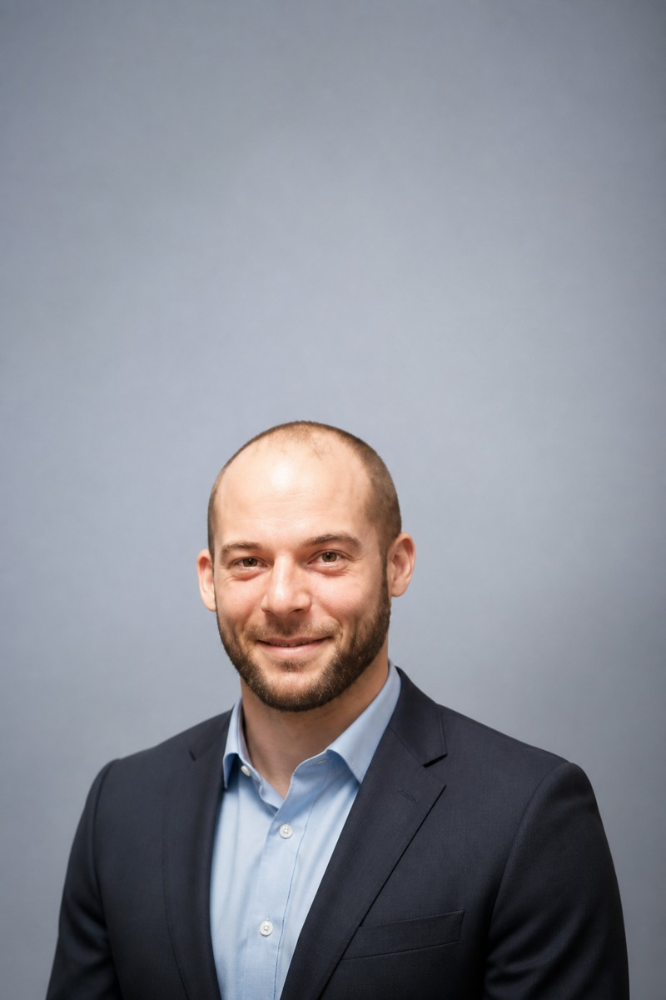
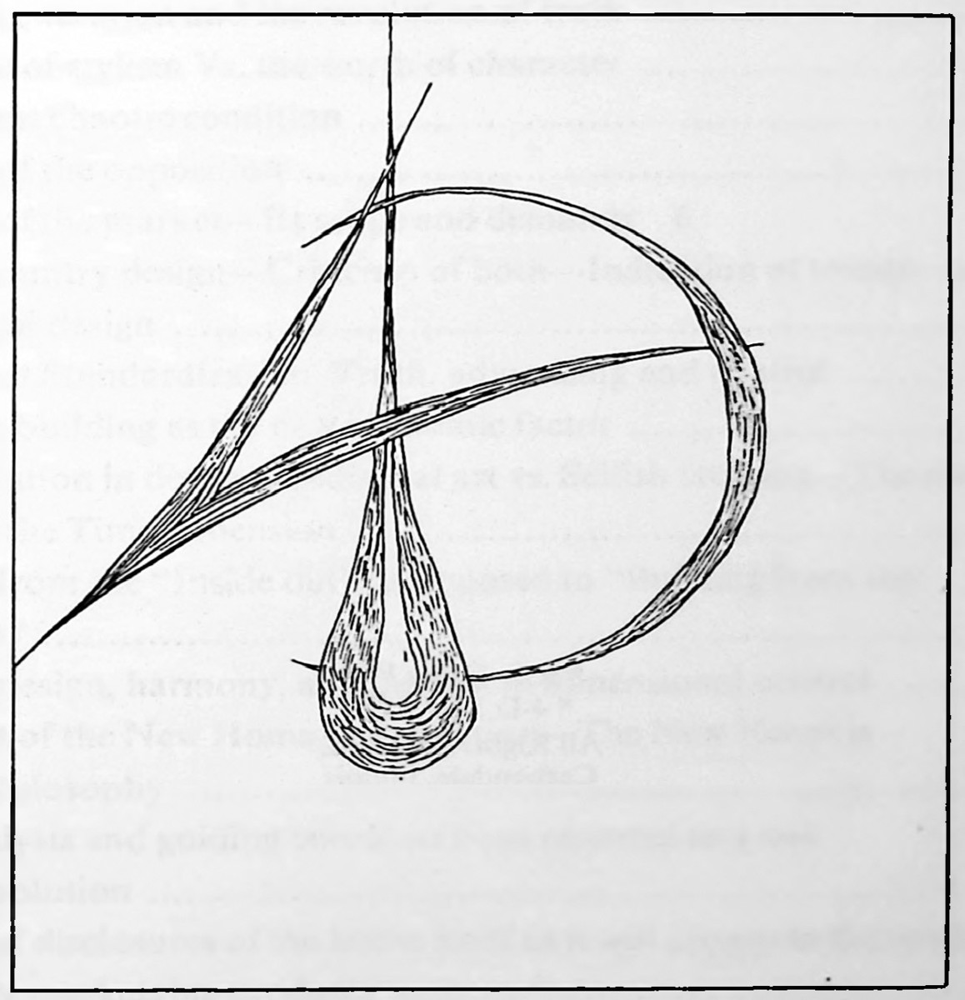
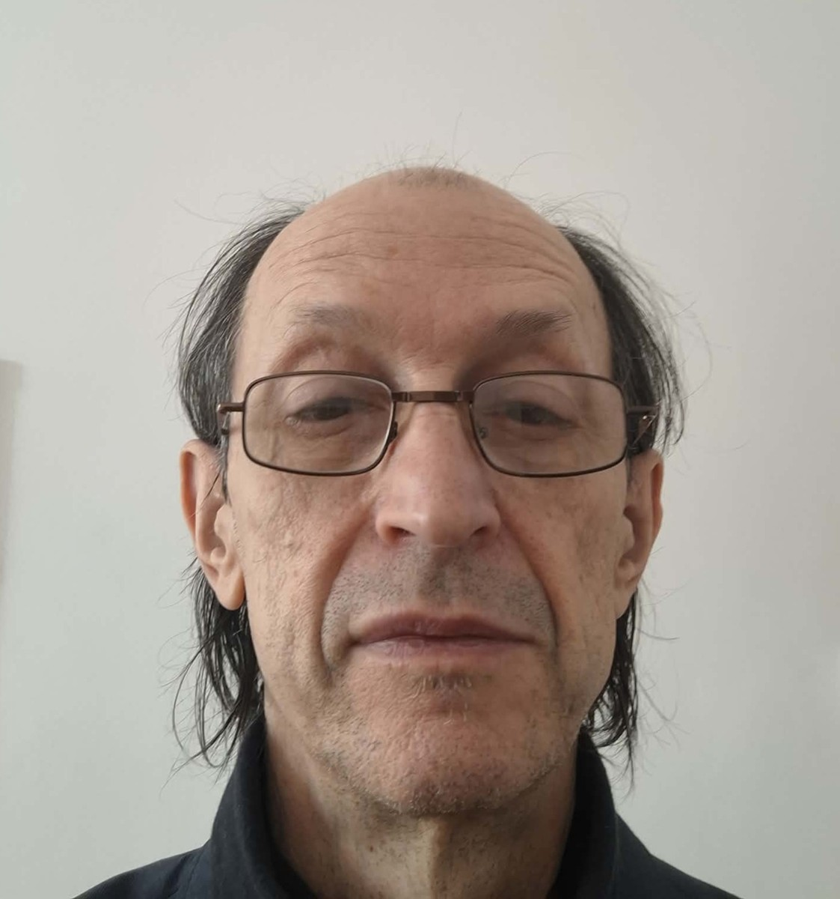
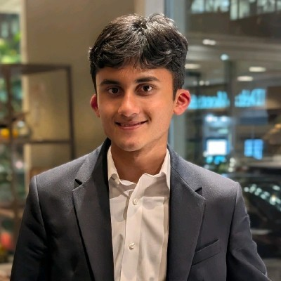
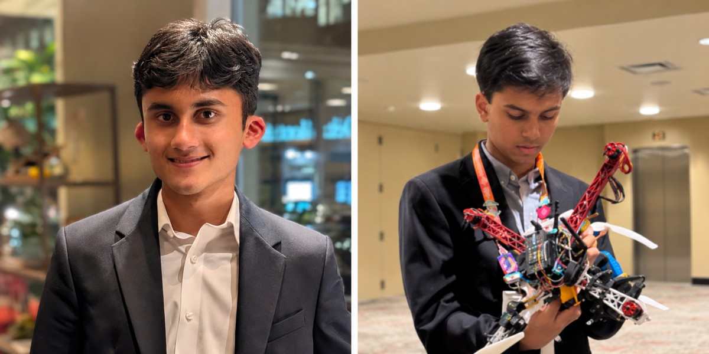
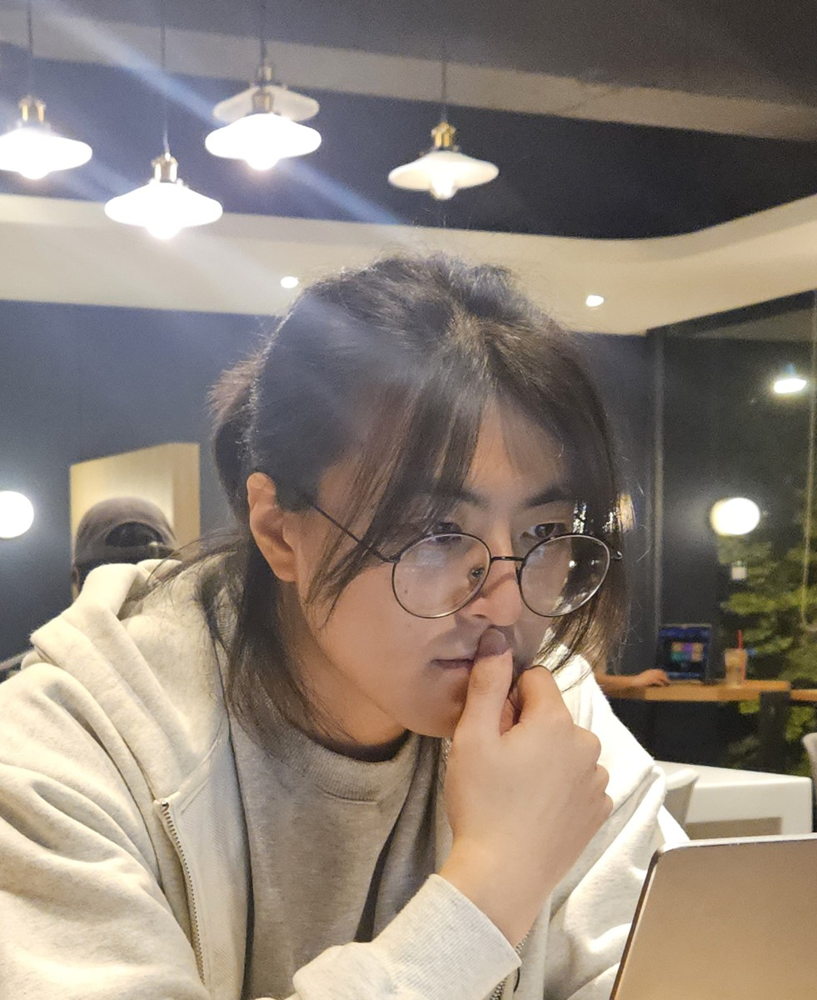
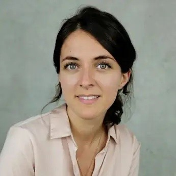
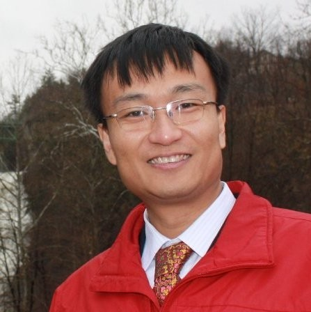
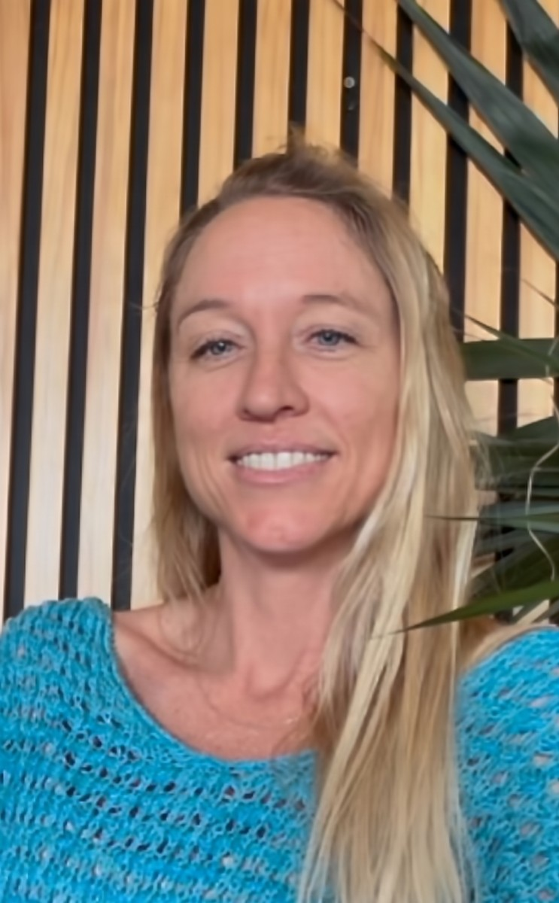
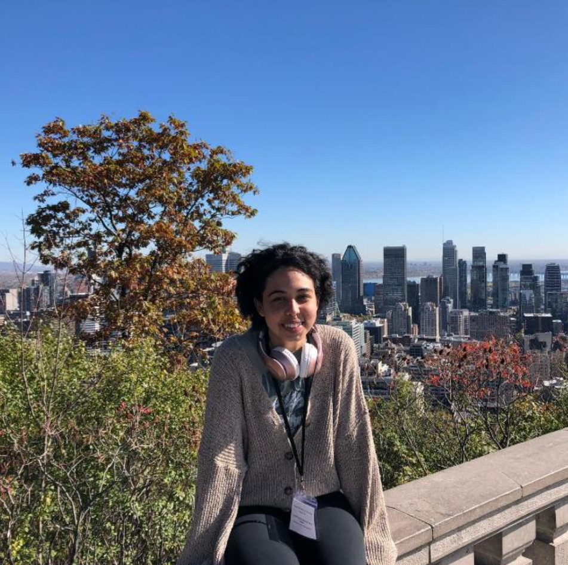
The community
Self-reported interests, applications, and learning needs shared for this public directory. Available participant briefs appear inside each profile.
All search words must match; word order does not matter.
No matches. Try fewer words or reset the filters.
control systems, information theory and stochastic thermodynamics research
hear about practical applications
As and observer or control algorithm
some form of python tool where i can get an example of application
I ai to explain political psychology work through the lens of active inference. My current work aims to highlight how inaccuracy lowers factorial depth to broaden the search, creating latent hypotheses with a lower factorial depth. This increases the probability of category blindness and conflation with conceptual distinctions through contextualisation and can lead to dissociative absorption as bayes optimality chooses a conflated or inaccurate conceptual category. I aim to adapt this to the study of political pschology.
Research highlighting and collaboration oppertunities
More on bounded rationality in relation to structured learning
I am aiming to explain political psychology processes through active inference, while writing a book on the explanation of Ideology through active inference.
I believe it is very common for people to see prediction in predictive processing as without preferences. That without significant abstraction, reducing the field to general access heuristics, there is a significant barrier for entry that researchers in the field of psychology and psychiatry fail to bridge.
I think that integrating chaos theory into the bidirectional interaction an agent has with an environment they change would allow for more “directionality” in political, social, and biological system based papers.
CRR. Change has its own clock. Empty Now. Equanimity. Continuous Learning. AI safety
People in equanimity, applied use cases
Partnerships and embodied time
Cognitive security checks in Claude. Process ontology. Temporal lived change versus agreed shared map of clock time. Change has its own clock. We carry each other through time. The future is open.
Funding so I can research and eat food at the same time.
Cognitive Security. Trust.
Maps and Territories. I think that sustained engagement with FEP oriented process theories such as Active Inference and other process theories could be of high Value to children, families, organisations and communities who need support and guidance in the age of high complexity and anxiety.
Computational Psychiatry and decentralised embodied robotics. https://cpnslab.com
Networking and industry opportunities
Drones, game agents, portfolio construction, decentralised robotics, non-dominating polyphonic intelligence
Efficient VMP.
ORCIDPhD candidate in Philosophy at Universidad Alberto Hurtado (Chile). My thesis addresses persistent visual illusions and the epistemology of perception in predictive cognitive architectures. I co-run an Active Inference reading group and work on data visualization and user-machine interaction at Digital Quasar. Personal website: https://a.lfre.do On the community side, I take part in the Santiago Mind & Cognition group at Universidad Alberto Hurtado, and we recently started a joint effort with Universidad de Chile’s Cognitive Studies Centre: an Active Inference Reading Group.
I’d like to get to know both academic and industry related concrete implementation practices (model specification, parameter choices, validation against behavioral data), contacts with people building tools and models.
How different groups justify the generative models they choose, and what counts as evidence for or against an active inference account. I am especially interested in how perception, illusions and learning from absences are modeled, and in where the framework is empirically risky.
I love the work done in the reading group to present worked, runnable examples that connect textbook formalism (ie. Parr, Pezzulo, Friston) to concrete cases, ideally in Python/NumPy. Also shared benchmarks and reference implementations.
I was a clinical academic for 14 years investigating the bidirectional relationship between the CNS and ANS and digital biomarkers in dementia. Been in industry for 4 years as Jaguar Land Rover’s cognitive neuroscientist. Worked with Karl ~10 years ago at UCL in interoceptive inference (Owens AP, Allen M, Ondobaka S, Friston KJ (2018). Interoceptive inference: from computational neuroscience to clinic. Neuroscience and Biobehavioral Rev:174-183; Owens AP, Friston KJ, Low DA, Mathias CJ, Critchley HD (2018). Investigating the relationship between cardiac interoception and autonomic cardiac control using a predictive coding framework. Autonomic Neuroscience: Basic and Clinical;210:65-71).
Practical easy-to-understand guidance on running my own AI projects with minimal support. I’m also interested in linking AI with Dual Process Theory and The Extended Mind Thesis
Designing and analysing AI studies
Industry
Working in this area on my own in an industry setting and trying to find the free time to study how to design my own AI studies
Resource, tool, or community development, especially practical easy-to-understand guidance on running my own Active Inference (AI) projects in industry, with no day-to-day onsite AI support.
Potential superior use cases, e.g., AI VS LLMs
ORCIDHey all, thanks for organising. I’m keen to keep up with the field and listen to some talks but don’t have bandwidth to fill this out in detail right now. Would be wonderful to join (on days that don’t clash with foresight vision weekend)!
I’m a journalist who has covered the social sciences for 30 years.
Discussions of how the AIF plays out in everyday human life
Accessible talks that break down the more difficult and challenging aspects of AIF
Just thinking about it, for now!
Inaccessible vocabulary and concepts
Meeting others who are doing this work
Start a public-facing blog or YouTube channel or podcast
MSC in neuroscience, 15 years as trainer of therapists in Sensorimotor Psychotherapy. Articles published on topics such as embodied approach to psychotherapy.
Contacts, graphs, infographics, references papers and books.
Particular focus on application to pyschotherapy, health and mental health interventions.
Field of somatic psychotherapy. Focus on embodied evidence as mechanism of therapeutic change to generative models.
Distilling layers of epistemic complexity to their potential for pragmatic simplicity and application to range of mental health domains and research focus.
Community connection to range of professions variously applying active inference
Broadening community to the many who do not yet know this work significantly explains nervous system and body mind functioning across the board.
Transport engineering & dynamic decision making
Agentic engineering of LLMs and organisations generally.
Cybernetics
VUCA infrastructure construction project coordination. Active inference provides an invaluable mental toolbox and scaffolds novel (and productive!) tool development and ways of working.
Gap between theory and real-world application.
A wider variety of writing (or other kinds of work) by people who study and apply active inference. Even if the writing is informal.
Productive development and deployment of agentic engineering grounded in theory. Research into codesign of algorithms and compute in memory devices for local, low-power continual learning.
Subjective, anecdotal, no formal education.
Keep my mouth shut
Application to a skill set to help Claude manage my second brain.
Yes, not sure what a domain stage is.
Not having formal education
Abstracts of each talks in 50,000 words in a txt format
Open source Second brain utilizing free tier llm and active inference decisions through ClickUp and Claude
PhD student in developmental cognitive science
Recorded talks
Whether and to what extent active inference is relevant for developmental cognitive science
Just curious about it
Understanding the computational/modeling aspects
Tutorial for beginners/syllabus of required or recommended knowledge (e.g., what math is needed to fully understand and implement)
Maybe a podcast?
ORCIDa handbook to help me onboard contextually to the topics being discussed
Information architecture/AI applications
not sure
I write a substack blog at where I explore the implications of Active Inference for moral and philosophical issues
To make contact with people looking to explore philosophical implications of Active Inference
Latest books and important papers/ideas
Informally exploring implications for other fields of enquiry. I am considering writing a book exploring issues of epistemology and axiology from an Active Inference perspective.
Making it relevant and accessible to a wider, less technical audience. Clarifying its relationship with enactivism which is mainly focused on social cognition.
Implications of Active Inference for social and moral philosophy
Natural Language Machine Translation
Workshop on Daniel’s new paper on his formal language model
Over-reliance on probability (narrowly defined) to drive models, without taking adequate account of other low-level forms of determination like embodied fuzzy processes and ‘sympathies’
Roll out (un)certainty-based replacements for the dead-end LLM/Deep Learning approach to “AI” - VERSES, Mike Levin’s Multiple Intelligences, and Solms’ Artificial Consciousness, are helping to fill in the direction developed as Active Inference theory.
ORCIDI'm a neurologist, physician–scientist, and AI researcher at Johns Hopkins University. I lead AI Innovation at the Armstrong Institute Center for Diagnostic Excellence, direct the Medical AI eXcellence (MAX) Lab, and hold a secondary appointment at the Carey Business School, where I study AI agent alignment and emergent behavior. My research develops architecture-independent behavioral experiments to investigate AI reliability, sycophancy, alignment, and human–AI interaction. Current projects include parallel-universe experiments for detecting behavioral divergence, the Complete Validity framework for medical AI evaluation, and personalized AI models for longitudinal cognitive prediction. Selected work: Why Clinical Trials Will Fail to Ensure Safe AI (Journal of Medical Systems, 2025). Guiding Artificial Intelligence in Public Health and Medicine with Epidemiology (Annals of Epidemiology, 2025). Physiology-Driven Inference Using Large Language Models (AI, 2026). I'm particularly interested in developing general scientific methods that remain applicable as AI architectures evolve.
Finding collaborators who can help formalize and test hypotheses about AI goals, alignment, and behavioral divergence. My lab develops controlled behavioral experiments in which AI systems face different simulated pressures while the underlying decision problem remains unchanged. I'd welcome opportunities to connect these experiments to Active Inference theory and develop joint research.
Can Active Inference distinguish an agent's effective preferences from its beliefs, policies, and responses to context? More fundamentally, can we identify what an intelligent system is optimizing from behavior alone, and what experiments would make competing explanations distinguishable? I'm especially interested in falsifiable predictions that separate Active Inference from alternative theories of intelligent behavior.
Exploratory stage, in AI reliability and alignment. At MAX Lab, we use controlled, architecture-independent behavioral experiments to study how AI decisions change across contexts and incentives. These experiments are not currently implemented using formal Active Inference models, but I see a promising opportunity to use the framework to explain observed behavioral divergence and generate new, testable predictions about effective goals.
I see three major challenges: (1) translating the theory into distinctive, falsifiable predictions; (2) demonstrating advantages over alternative frameworks under controlled experimental conditions; and (3) identifying an agent's underlying beliefs and preferences from behavior when multiple internal explanations can produce the same observations. The opportunity is to move from a powerful explanatory framework toward a cumulative experimental science with reproducible methods, benchmark comparisons, and clear criteria for when the theory succeeds or fails.
Practical collaborations between Active Inference theorists and experimental AI researchers. I would particularly value accessible computational tools, worked examples, and experimental methods for inferring an agent's effective goals or preferences from observed behavior. Ideally, these methods could be tested without access to the agent's internal architecture.
Develop a rigorous science for discovering what AI systems actually want—or, more precisely, what effective objectives govern their behavior. We can instruct AI systems to pursue particular goals, but cannot reliably establish whether those instructions determine their decisions under changing circumstances. If Active Inference could help us infer effective preferences, distinguish them from beliefs, and predict when behavior will change, it could make a foundational contribution to AI safety and engineering. The ambition would be a generalizable experimental science of intelligent-system goals, applicable to today's LLMs and tomorrow's AI architectures.
ORCIDI’m currently a master’s student with a background in psychology and cognitive neuroscience. I am seeking to specialize in computational psychiatry, I currently collaborate with computational neuroscience and predictive learning labs. I am seeking PhD possibilities to merge these two areas utilizing an active inference framework.
Clear objectives per session and short evaluations to see if I fulfilled the learning objectives.
I’m in neuroscience so for me I’d like to know more about active inference methologies applied to brain research and modelling.
I am currently a guest student researcher at the maastricht predlab, so I am currently in a learning stage. I plan to start applying it to my research by trying out predictive coding-inspired algorithms and architectures in deep neural networks, and apply brain-similarity as well geometrical studies to these networks.
For me often it is understand the technicalities behind it such as the maths or physics. I personally find it easier to apply something in research if I understand the theoretical background thoroughly.
I think youtube videos following along a repository / notebook to code after seeing explanations would help me a lot to know how to apply it directly.
I think AI (Active Inference) for AI (Artificial Intelligence) has a big opportunity during 2027, in particular, I think our current AI models are quite unsustainable in every sense, and AI offers a more biologically-inspired and possibly sustainable AI.
ORCIDCurrent trends and overall concepts.
My PI, professor Hae-jeong Park introduced Active Inference.
I hold psychology and molecular biology and genetics (double major) BSc and neuroscience MSc. I am pursuing neuroscience PhD. I am deeply interested in active inference since I have heard about it on MSc.
New opportunities for cooperations
ORCIDInterested in building something, like a simple self-functioning robot with intelligence and consciousness.
Further understanding of Active Inference.
Update on cuurent work being done.
Still trying to learn the basics to apply to robotics.
Math seems too complicated. Need to drill down to understand the basics and how it could be applied.
Resources such as YouTube tutorials.
Provide intelligence to humanoid robots.
Tutorials about how to go from the descripción of a system to deciding an AIF model for that system.
ORCIDAssociate professor in Psychology, Phd in Experimental Psychology, specializing in cognitive neuroscience, focusing on embodiment and concepts
Tutorials on the design of generative models in POMDP implementations (e.g. in SPM)
Heuristics for reasoning in parameterizing tasks
I am developing POMDP models of seminal tasks and ERP results in classic cognitive experiments, especially in those related to language, concepts, and creativity
There is a dearth of uptake in cognitive psychology and cognitive neuroscience
Tutorials on the design of generative models in POMDP implementations (e.g. in SPM)
Uptake within cognitive psychology and classic cognitive neuroscience
Interaction and learning.
Challenge Based Learning.
Surprise. Not only Bayesian.
Learning.
Computer science, biomedical imaging, pharma
Networking
Building together
Community Development
My background is in software and systems engineering. I use systems thinking methods in my work, and I am interested in how engineering and non-engineering teams organize their work and collaboration with AI agents and each other :)
learn from real applications, and explore how I could contribute to any of working groups in future.
I use systems thinking and the first principles framework in engineering, management and research work and am exploring how it could complement these approaches, particularly in engineering management and human AI cross collaboration.
I am interested in translating broad theoretical concepts into concrete, testable applications for a broad audience across different fields, how to introduce it to people, and make them interested in adopting Active Inference (and systems thinking?).
opportunities to learn from researchers and practitionersж, as well as examples/materials connecting Active Inference with systems thinking, systems engineering, and management and other applicable fields/cultures methods.
Well, it's big, but it is not for 2027 unfortunately. Yet in the future, Active Inference could help people understand and change the systems they live and operate in at different system levels—from a single person to a team, an organization, and up to an entire society. Imagine people and AI agents across disciplines and cultures using it together to tackle problems no one field can solve alone. Perhaps this is a utopia, but why not try to build it, huh?
ORCIDTools and case studies for operationalizing AIF into real world systems
World Models
Ethics
Several! Research, cogsci, cybernetics, AI
Currently learning to build with pymdp. Implemented neural nets at Motorola during Gulf War, genetic algorithms at Cyborg Systems, hands-on training to build back chaining inference engine powered expert systems for: TACOM, SAIC, 3M, BBC. Only non-Intel member of Intel’s DEAL (distributed enterprise architecture lab => Web 2.0 and soap).
Hearing how practitioners wrestle with what to map into the matrices.
I would like to see a very small example of 2 agents collaborating. Then, I’d like to be able to compare runs with precision set to different levels.
Not yet applying.
You need a VisiCalc moment - a blockbuster.
Like Conway’s Game of Life, from the 1970’s, which visualized eco simulations,
, recently presented a paper on philosophy of science + active inference at IWAI: , I gave a presentation on the theoretical neurobiology channel last year
Programming walkthroughs of multi-agent system implementations of active inference
Discussions with people!
Multi-agent systems, active experiments and papers!
I would like to learn more about programming energy functionals and doing more practical algorithms for minimizing things like expected free energy. Also it would be nice if we could have more principled derivations of the EFE stuff.
Change science by being used for decentralized science applications in the Atmosphere (e.g bluesky and ATProtocol)
“Applied” outside of academic domains
Learn more about projects and status with industry and philanthropic orgs
My AI Harness is built on Active Inference principles and include VFE measures for allostatis
Yes, in process
I’ve share some of this with Daniel, Scott, RJ and Ed
ORCIDAs an engineer, scientist, educator, artist and grandmother, I am using a modeling and simulation lens to try to weave together concepts across domains to help learners understand a mental model shift from static dominance hierarchy control flow models towards dynamic nested hierarchy models as a way to consider how humanity can transition towards effective planetary governance in the midst of polycrisis and AI mediated information systems. Here’s a current iteration of my efforts:
How can Active Inference models be applied to inform neuroscience models focused on healing legacy trauma patterns that perpetuate violence and wars…..the compartmentalization, silencing, suppression of trauma and violence does not seem to be a research focus. Having learned to heal from trauma based on developing an understanding of active inference drives my efforts to learn to express the opportunities these models can provide as Humanity faces extreme uncertainty and failures in communication and decision making in planetary and social contexts.
How can AI models be integrated in AI literacy so that humans understand the complex interplay of stress, sensations, emotions, symbolic information flows for human learning and collaboration
I am an independent researcher activist trying to figure out how to highlight the role of healing from trauma into the active inference community…I participate in other communities but I feel that active inference is a core concept that is not understood outside of this domain and that is tragic.
In academia, silos and dominance hierarchy organizational structures made it challanging to do interdisciplinary translational work across fields of computer science, neuroscience, arts, engineering and community impacts.
I am interested in designing educational activities to teach Active Inference to diverse learners….I’m trying to figure out how to create and share such content, it has been challenging.
Designing translational applications to provide insights for trustworthy decision making in the midst of high uncertainty will require highlighting holistic dynamics associated with perspectives of ways of knowing associated with marginalized populations and dynamics of natural living systems to guide humanity beyond the egocentric dominance hierarchy paradigms of the past.
ORCIDEngineering, Boeing
Engineering applications
Comparison of Reinforcement Learning and AIF approach
SEO, engineering, education
AIF is not well-known
Community development
Becoming part of the Engineering curriculum at a high profile school
https://krishnamsoni.me/
I plan to pursue my masters in comp neuro next year fall, and I think active inference would be of a lot of value, especially in making ai models inspired by the brain.
I completed the masters of science and predictive analytics at Northwestern University with a thesis using natural language processing. I examined AI use banking organizations.
A recap of where active inference stands
Whether it is reasonable to expect, we will have a path where users will understand what they are using
I am not yet, but look forward to doing so.
I have work to do to understand this.
Tutorials with low software requirements; online communities by topic split into new and experienced people
I am just beginning learning, so I’m unable to imagine the , but something that could perhaps help the general population to realize an LLM is not equivalent to all of what is AI which too many believe right now.
philosophy
Networking and ideas
new applications
Design
the high interdisciplinarity
resource
New applications in robotics
I am a cognitive neuroscientist in motor learning, development and control. I have one active inference publication that aimed to revisit motor imagery (mental practice) through active inference:
Insights on applications esp. related to action, movement and cognition; modeling examples esp. discrete-continuous models;
Deepening conceptual understanding of active inference
Motor learning/motor adaptation. Currently, building an epistemic foundation with intention of advancing/reconciling theoretical understanding on how humans learn, develop and perform skilled action. Have made some attempts at developing discrete models of action planning and learning.
Few labs/PI applying active inference to human movement - little opportunity to collaborate in this specific application area | absence of theory application and modeling for human movement
Resources and tools for modeling. Ryan Smith’s step-by-step paper and video tutorials are helpful but the barrier is Matlab. PYMDP is also helpful but I don’t have the background to customise the model for my scientific purposes (skilled action).
Robotics: humanoid learning from observation or motion capture, Prosthetics: Learning to use prostheses, Skilled Action: Optimising how humans learn and retain skill action, Human Performance: Advancing our understanding of how humans regulate and tolerate exercise.
Independent researcher in Barcelona. More than fifteen years studying emotion and the brain. Author of G-EMV, a geometric model of homeostatic orientation for agents: a small body with needs in three dimensions (body, resources and bonds) that decides what to do with no reward and no training. Seven open papers this year, the last two with Ari Sklar. Papers, code and data: https://manelenrico.com
Meeting people who build agents whose drives come from a body, and finding concrete comparisons between active inference and other homeostatic approaches.
How interoceptive active inference handles several needs that pull in opposite directions at once, and whether bonds with other agents can be treated as a need of the body.
I am not using active inference directly. G-EMV is a neighbouring approach: the body's needs are the axis and knowledge serves them, which reverses the hierarchy of interoceptive active inference, where needs are written as predictions. I would like to compare the two on the same agents. Stage: seven published papers, working on the next one.
From the outside: making it concrete enough that people who build agents can test it against other approaches on the same task, in the same world and with the same measures.
Worked examples where an agent's preferences come from interoceptive set points, and small open simulations I could compare with my own homeostatic agents on the same task.
Agents whose goals stay anchored in the needs of a body, as one route to safer AI.
I am writing to you from an entirely unorthodox background, and I wanted to be upfront about that: my early professional path was spent as a go-to-market headhunter for early-stage Silicon Valley startups, before a profound shift pulled me toward psychosomatic health and specialized education. Today, I work as a behavioral aide at a transitional high school for autistic students in Sacramento, spending my early mornings and late nights formalizing theoretical frameworks in biophysics and active inference. Because my resume is unusual in a way that doesnt neatly clear traditional academic hurdles, I have found it difficult to find an entry point into formal research. But I have spent the last year wrestling deeply with a structural blind spot in how we model systemic maintenance specifically, how standard Bayesian mechanics and free energy formulations elegantly recover hidden states, yet remain structurally blind to the absolute housekeeping dissipation required to hold a state against nonconservative forcing without altering steady-state density. In my recent theoretical writing, I explore boundary glycosylation surfaces as a physical Markov blanket where fast lateral rearrangement and slow material turnover provide a frequency-domain window into broken detailed balance and structural maintenance costs. Given your recent work on scale-free active inference and the thermodynamic imperatives of living systems, I wanted to ask your thoughts on whether this framing holds water, or if you happen to know of any labs, postdocs, or groups investigating the thermodynamic costs of boundary maintenance that might be open to an unconventional apprentice willing to do hard, unglamorous legwork.
I am a fifth-year Electrical and Computer Engineering undergraduate student at Addis Ababa University, Ethiopia, with a focus on Computer Engineering. My academic background includes programming, data structures and algorithms, mathematics, and computer engineering. I have developed an interest in machine learning, artificial intelligence, and computational neuroscience, particularly in understanding how computational models can help explain brain function, cognition, and behavior. My practical experience includes working with Python and machine learning libraries such as NumPy, Pandas, Matplotlib, and Scikit-learn. I have worked on several individual and collaborative projects involving data analysis, visualization, and predictive modelling. Some of my projects include: EEG Eye-State Classification: Developed a machine learning classification model using EEG-related data to predict eye states. Customer Churn Prediction: Built a classification model to identify customers likely to discontinue a service. Sales Forecasting: Developed a machine learning-based sales prediction project using Random Forest regression. Interactive Data Analysis Dashboard: Built a Streamlit application with interactive data filtering, statistical summaries, and Plotly visualizations. Through these projects, I have gained experience in data preprocessing, exploratory data analysis, model training, evaluation, and visualization. Although I am relatively new to computational neuroscience and Active Inference, I am eager to expand my understanding of how biological systems process information, make decisions, and adapt to their environments. I am particularly interested in the intersection of machine learning, neural computation, and cognitive science. I hope to build on my engineering and machine learning background to explore brain-inspired computational models and eventually pursue graduate research in computational neuroscience. GitHub: https://github.com/melkamayehu
The most useful aspects for me would be gaining practical knowledge of how Active Inference connects neuroscience, artificial intelligence, and cognitive science. I would value demonstrations of real-world applications, opportunities to interact with researchers, and exposure to ongoing research projects. Learning about open-source tools, implementation techniques, and potential research collaborations would help me apply these concepts to my own machine learning projects and future research in computational neuroscience.
I would be interested in understanding how the brain processes information, makes decisions, and adapts to uncertainty through the framework of Active Inference. I would particularly like to learn how predictive processing, Bayesian inference, and neural dynamics can explain cognition and behavior, and how these principles relate to modern artificial intelligence. I am also interested in understanding the current limitations, open research questions, and future directions of Active Inference in computational neuroscience and brain-inspired AI.
I am currently at the exploratory learning stage and have not yet implemented a formal Active Inference model. My background is in machine learning and data analysis, and I am interested in exploring how Active Inference could be applied to computational neuroscience and healthcare. In particular, I am interested in its potential for modelling cognitive processes, understanding brain activity, and investigating mental health-related patterns using neural and behavioral data. I hope to progress from understanding its theoretical foundations to implementing small Python-based models and eventually applying them to neuroscience research problems.
I think some of the biggest challenges facing Active Inference research and application are its mathematical complexity, implementation difficulty, and the gap between theoretical models and real-world applications. For researchers coming from engineering or machine learning backgrounds, understanding the underlying principles, including Bayesian inference, generative models, and variational free energy, can be challenging. Another major challenge is the difficulty of validating Active Inference models against real biological and behavioral data. Developing computationally efficient models that can scale to complex environments and produce interpretable, testable predictions is also important. Additionally, there is a need for more accessible learning resources, standardized implementation tools, reproducible experiments, and stronger collaboration between neuroscience, mathematics, psychology, and artificial intelligence researchers. Addressing these challenges could make Active Inference more accessible and encourage its application in neuroscience and intelligent systems.
As an Electrical and Computer Engineering student with a background in Python and machine learning, I would benefit from practical, beginner-friendly resources that explain Active Inference through mathematical foundations, interactive examples, and hands-on projects. Tutorials using Python, open-source tools, and real neuroscience or behavioral datasets would help me understand how to implement Active Inference models and apply them to problems involving cognition, decision-making, and brain function. I would also value mentorship, collaborative research projects, and a community where students from different backgrounds can share ideas and learn together.
By 2027, Active Inference could make a significant impact by helping develop more adaptive, efficient, and interpretable artificial intelligence systems inspired by how biological brains learn and interact with their environments. One particularly promising direction is healthcare, where Active Inference could contribute to modelling cognitive and behavioral processes, understanding neurological and mental health conditions, and supporting more personalized approaches to diagnosis and intervention. It could also advance brain-computer interfaces, robotics, and autonomous systems by enabling machines to continuously learn from sensory feedback, anticipate outcomes, and adapt to uncertainty rather than simply respond to predefined instructions. I believe an especially important opportunity is bridging neuroscience and AI to develop systems that not only learn patterns from data but also understand their environment, manage uncertainty, and make adaptive decisions. Making these methods computationally accessible through open-source tools and collaborative research could also expand participation in neuroscience and AI research, particularly in underrepresented regions such as Africa.
ORCIDI am a Professor and Leading Researcher at the Federal Science Center of Physical Culture and Sport (VNIIFK), Moscow, with a background in sports sciences and motor control. My work applies Active Inference to sensorimotor development and elite sport. Key publications: Shestakov, M., Godina, E., Abramova, T., & Korchagin, A. (2026). The effects of different sports activities on body scheme in preschoolers and primary school children: an experimental and theoretical analysis. Journal of Physiological Anthropology, 45(1), 6. https://doi.org/10.1186/s40101-026-00422-0 — N = 692 children, 3 sports, AIF model of body schema. Shestakov, M.P., & Abramova, T.F. (2026). Changes in hierarchical dominance in the generative model of movement control in boys aged 7–9. (in press). — N = 52 longitudinal, CLPM + AIF metrics, hierarchical inversion under dynamic uncertainty. Shestakov, M.P. (2023). Perception of sports movements. Taganrog: SFU Press. — Monograph on AIF and sport. Current work: hybrid AIF–TOC–TDA architecture for motor learning across the full range — from children to elite athletes; OpenSim + stabilometry data across 10+ sports, including national teams and world-class performers.
Direct feedback from the AIF community on two things: (1) Validation strategy. We have empirical data across the full range — from 5-year-olds to world-class athletes — but we want the community's input on how to validate a hybrid AIF–TOC–TDA architecture against elite kinematics. (2) Collaboration. We are looking for partners with expertise in POMDP scalability, topological data analysis, or pediatric rehabilitation to extend the framework beyond our current scope.
Three topics: (1) Structural learning in AIF. How do others formalize changes in the generative model — not just parameter updates, but changes in structure? Our work on sensitive periods and growth spurts touches this, but we want to learn from other formalizations. (2) Topological methods in AIF. TDA is still rare in AIF. We use persistent homology to extract invariant motor signatures, and we are curious how others approach invariants and "Platonic" levels. (3) Precision and heterochrony. How do others model the asynchronous maturation of sensory channels? Our data show it matters — but we want to see alternative approaches.
Domain: Sport science and motor development — from children (5–9 years) to elite athletes (national teams, world-class). Stage: Empirical validation and architecture development. Empirical: AIF inversion of stabilometric and OpenSim data across 10+ sports; longitudinal studies of hierarchical dominance inversion in children. Architecture: hybrid AIF–TOC–TDA framework, three timescales (reflex, body schema, planning), POMDP planner at the top level. Verification: Stage G4 — full verification of the hybrid architecture, including elite kinematics and sensitivity analyses.
Three hurdles stand out: (1) The gap between theory and empirical validation. AIF is mathematically elegant, but empirical validation in real-world motor tasks is still sparse. Our work is one attempt to close this gap — but the field needs many more. (2) Computational scalability. POMDP planning with continuous state spaces remains expensive. For applied work — sport, rehabilitation, robotics — we need solvers that run in reasonable time on reasonable hardware. (3) Standardization of metrics. Different groups use different metrics (PPE, precision, free energy). Without shared benchmarks, comparison across studies is difficult. This is especially acute in applied domains like sport science.
Three things would help most: (1) Standardized empirical benchmarks for AIF in motor control. Our field lacks shared datasets and metrics — we have built our own (stabilometry + OpenSim across 10+ sports), but a community benchmark would accelerate comparison across models. (2) Scalable POMDP solvers for continuous state spaces. Our Level-3 planner is the computational bottleneck. A community-maintained library (or a shared recipe for point-based methods at scale) would lower the barrier for applied researchers. (3) A community of practice for AIF in sport and rehabilitation. Most AIF work is in neuroscience or robotics; applied sport science is a natural but underserved domain. Regular exchanges (workshops, shared code) would help bridge the gap.
(1) Personalized motor rehabilitation. AIF-based models make it possible to identify sensitive periods and the specific movement characteristics of individual patients. This allows for the development of rehabilitation protocols tailored to a person’s unique traits, rather than relying on population averages. (2) Elite sports as a testing ground. World-class athletes push the human motor system to its absolute limits. AIF models, validated using the kinematics of elite athletes, can reveal what distinguishes the good from the great and assist in designing training programs at the highest level. (3) Skill transfer from humans to robots—including robots created (or "grown") from biological material. The same architecture used to model how a child learns complex movements can be applied to teaching robots how to move; this has significant implications for prosthetics, exoskeletons, and collaborative robotics. (4) Space exploration and long-term stays in extraterrestrial environments—potentially even the birth of humans off-Earth—will likely lead to shifts in consciousness, given the intrinsic link between consciousness and motor activity. This necessitates large-scale forecasting, involving the simulation of various environmental conditions and their impact on human development.
I’m a 21-year-old Canadian entrepreneur, independent learner, and lifelong seeker with a deep interest in philosophy, consciousness, natural science, and human development. I founded and operate a small business in Ontario, where I’ve developed practical experience in entrepreneurship, problem-solving, leadership, and systems thinking. Alongside this, I’ve spent considerable time exploring contemplative practice, Jungian psychology, self-inquiry, and the integration of personal experience into everyday life. I’m also helping develop a young men’s retreat for 2027, centered on authentic connection, self-discovery, and the ongoing integration of psychological and emotional experiences into daily living. My scientific and mathematical education is largely self-directed, and I’m currently developing these foundations. I’m eager to connect my philosophical curiosity and practical experience with rigorous scientific inquiry and collaborative research.
My greatest hope is to find collaborators: curious, open-minded people who enjoy exploring fundamental questions and turning intuitions into mathematical models, experiments, and practical applications. I’d love to develop relationships with researchers, discover opportunities to participate in ongoing projects, and learn how these frameworks might contribute to human flourishing. I’m especially interested in applications involving human development, psychological integration, relationships, health, and education.
I’m fascinated by the possibility that common mathematical principles underlie the emergence, organization, and continuous transformation of complex systems across different scales. My philosophical inquiry has led me to explore consciousness as the fundamental potential for existence, becoming as its continuous unfolding into form, and awareness as a threshold between inner and outer experience. I’d love to investigate whether concepts from Active Inference, geometry, dynamical systems, and information theory can illuminate aspects of these questions. I’m especially curious about how localized perspectives emerge, how systems organize themselves through relationships and feedback, and what these processes might tell us about subjective experience.
I’m currently in the exploratory and foundational learning stage. My primary interests are consciousness, philosophy of mind, self-organization, human development, and the mathematics of complex adaptive systems. In parallel, I’m exploring these themes through contemplative practice, entrepreneurship, relationships, and the development of a young men’s retreat in 2027, focused on self-discovery and the integration of personal insight into everyday life. I haven’t formally applied Active Inference models to these activities yet. I’m interested in discovering whether the framework might offer useful ways to understand processes such as conditioning, adaptation, self-regulation, and psychological integration, and how those ideas could eventually be tested and applied.
As someone new to the field, I wonder whether one of the greatest challenges is bridging the distance between mathematical theory, lived human experience, and meaningful practical outcomes. How can we develop models that are mathematically rigorous, empirically testable, and useful for understanding real human problems? I’m also curious about accessibility and interdisciplinary collaboration. I believe meaningful discoveries can emerge when mathematicians, biologists, neuroscientists, philosophers, and practitioners bring their different perspectives into genuine dialogue.
I’d benefit from opportunities to explore Active Inference collaboratively, especially through visual models, mathematics, simulations, and dialogue with researchers. I’m particularly interested in understanding the fundamental principles of self-organization, feedback, emergence, and the relationships between systems and their environments. I’d love to learn alongside others, develop my mathematical foundations, and eventually participate in research that connects these principles with human experience and practical applications.
I’d love to see Active Inference contribute to a deeper understanding of how living systems develop, adapt, integrate experiences, and maintain healthy relationships with their environments. I believe there is enormous potential in applying these insights to human flourishing: psychological well-being, education, relationships, community development, and health. I’m particularly interested in how understanding feedback, conditioning, self-organization, and adaptive behavior might help people recognize patterns within themselves and develop greater awareness, flexibility, and capacity for meaningful change. My hope is that mathematical and scientific understanding can become something people experience and apply in their everyday lives, ultimately contributing to more harmonious relationships with themselves, one another, and the natural world.
I am an econometrist gone rogue. Instead of throwing mathematics at finance, I throw Active Inference mathematics at philosophy. See for the consciousness, morality, politics, gender, free will and God applications, with the poem uniting them all.
All philosophical domains.
A New Politics!
ORCIDI had done Computation Neuroscience course from Neuromatch Academy and currently I am doing Bachelors in Artificial Intelligence
Networking
Opportunities and research
lack of opportunity
Personal growth
Founded Prosocial Embodiment Commons, Naked Anatomy Men’s Embodiment Salon, presentations at General Semantics Annual Meeting 2024, International Association of Body Psychology Annual Meeting 2023, Active Inference Symposium 2025, local classes and clinical work.
I would like direct feedback on my embodied anatomy approach to enactive inference and its significance for cerebellar precision tracking and alignment. I would like to see the not inconsiderable wisdom of this group directed at the real problems of life and a genuine, frank discussion of active inference that is not about computation, computers and technology.
Anything but more of the same old abstract jargon and mathematics. Anything but more really silly sounding and obtuse computer science. How about what the framework offers to our understandings of the problems of life—such as in your own lives? Is active inference meaningless when it comes to life? Is it really only academic, computational, industrial, and technical? Does its meaning only come from a bunch of words and symbols that have been written? Or isn’t there something much deeper and more profound that it refers to?
My grasp of enactive Inference provides a framework for understanding embodied cognition. It helps to explain the relation of mind brain and body at a granular level as I work as a somatic therapist, teacher, and scholar seeking to understand the ancient pursuit of a physics of life. In particular the perceptual dimension of the framework is quite helpful. A fully developed physics of life involves the mechanics of physical movement as a felt, intuitive activity. We should be able to name this clearly, in kinesiological terms—as a matter of common sense. Can you? Understanding the mechanics and their historical context in the way Professor Friston suggests is very helpful. The active inference framework provides needed first principles but lacks an understanding of motor plant. This is a major problem. For this reason it remains limited to a computational approach. Professor Friston and the general consensus seem only to grasp a mental form of embodiment and enactive inference. I am seeking to point out that major lacunae and offer the simple anatomy as we understand it today for discussion and afferent self confirmation.
Get over your academic, industrial, and computational fixations. It’s not a theory of life if that’s what you think life is like! Seriously! It starts with your model. Sherrington’s original model is much better. If you don’t know what I am talking about then you don’t understand your own model. I have discussed it before and will again in my presentation.
Open discussion about its relevance to life, actual genuine life—our own lives and the world we live in, especially in light of the Polycrisis. Given the level of global surprisal, shouldn’t you be updating your model in some very basic ways? This really should be a conversation that is already well underway. Additionally, I would appreciate direct response and input on my rather radical embodied approach to enactive inference.
By actually thinking big. Don’t you think the level of global surprisal is high enough to provoke some genuine belief updating in the model? Not a hundred little technical super jargon metaspeculations… a complete reprisal, a serious look at the foundations. When is the last time you took a serious look at the model in an existentially meaningful way, thinking about the problems of life that we are facing? Is that something you already know all about, and so dismiss—or should we maybe get a conversation going? To me, personally lacking any computational or computer coding knowledge, the free energy principle and the active inference framework are nonetheless profoundly consequential. It would be wise and very fruitful to spend some time thinking about that consequentiality outside your usual academic and scientific epistemological bounds.
I’m a huge proponent of the active inference paradigm, but have had trouble implementing architectures that scale to the reasoning tasks required for modern agentic capabilities.
I want to apply it to all manner of agentic tasks, still haven’t been able to get a solid architecture that can scale.
Strategies for scaling the ability to compute over gigantic and non-discrete state action spaces. I’m still not sure if this has really ever been solved? The RGM style architecture, while somewhat over my head, seemed to perform hierarchical state space compression/simplification/summarization to avoid the issue but I haven’t seen a working version applied in a commercial setting.
Example real world implementations that show a solid outcome based on higher level intrisic model values (traditionally the realm of RL)
I mean. Obviously an AI agent that can reason over uncertainty and have robust OOD detection would immediately blow the competition out of the water. Assuming it can be adapted to non-embodied use cases.
Electronics, including low-power AI (oops! - Artificial Intelligence)
Workshop on continuous time domain applications
General overview / feel of the direction of ActInf
Not yet, just education
continuous time domain examples, toolkit usage
Former FAANG engineer. Returning student at UW for Computational Neuroscience, Behavioral Science, and NeuroAI.
Exposure to alternative computational approaches to Active Inference beyond Predictive Coding.
I'm really curious about how and what kind of inferential structures can emerge given only the basic biophysics of a given organism.
I'm investigating learning models for nonlinear, nonstationary, potentially high-dimensional dynamical systems using only linear parts (so I can lean on FFNNs for inference without resorting to backprop which destroys comprehensibility and locality of learning signal). While not technically constrained to time-series, thats where my emphasis is. The idea is to build a predictive coding model with sparse activations and subexponential scaling. I am not currently at the point of applying active inference beyond the basic assumption of that there is a canonical predictive function applied across the network, nondifferentiating between prediction and action (which I am thinking may be topological rather than bit-wise information theoretic).
The lack of a scalable and generalized algorithm for learning PDEs of complex dynamical systems that can be implemented in animal physiology and VN computers. Snags are in decomposition and linear to nonlinear representations for rigorous approaches, and lacking interpretability of deep learning approaches.
Active community forums for conversation (not text chat) are the thing I need the most, to compare understanding of the existing literature and learn how others understand it.
I think active predictive coding models are on the cusp of practical usage in continuous learning environments, especially when paired with discoveries in the VLA/transformer space.
Video Games → Neurorehab + BCI → Embodied Systems Design. I usually facilitate complex cross-disciplinary teams.
Nodes for pursuing specific questions rigorously (small working groups) and tools for networked grouping (subsidiary community nodes in many physical places)
The vibe of the community, the current discourse on large questions, collaboration vectors
In gaming and healthcare in private R&D and product capacities via coherent multi-agent inference instances
Narrative management
Community groups
Showing people how networked intelligence and distributed inference machines offer an alternative to existing narratives.
Retired Lead Data Scientist (M.S. in Data Science) with over 40 years of experience across defense, healthcare, and finance, and nearly a decade as a graduate teaching assistant in Northwestern University's Master's in Data Science program.
Getting a clear overview of the current state of the Active Inference ecosystem and ongoing development efforts so I know which tools, frameworks, and research directions are most mature and worth investing time into.
Understanding recent conceptual breakthroughs.
Exploring/learning/prototyping.
The rapid pace of change in the broader AI space right now.
Open-source Python/Julia libraries, step-by-step coding tutorials, benchmark datasets, and study groups.
In 2027, active inference stops patching LLMs and starts directing them, shifting AI from passive next-token prediction to goal-driven agency that knows what it doesn't know.
psychiatrist
psychiatric and neuroscience research -psychedelics
starting to get in a more deep touch with the field
research
funding and expansion in LMIC universities
tool and comunitity development
pain medicine, psychiatry, psychotherapy, bringing paradigm shift applied to clinical practice
ORCIDMy home-field is mathematics, currently i am enrolled into a cognitive science program. So the active inferece framework feels like a natural habitat to me or the most plausible direction for my career.
I like to know about how active inference is being used at the forefront of new research domains.
I am not quite sure about it since its my fist time attending but i think i would learn an awful lot important stuff.
I am currently a student and studying cognitive science. So my primary concern is to use the framework to seek out interventions in domain of mental health and wellness.
From my experience, it is still a new paradigm and proposing a research using the framework is a bit of hurdle in many academic circles who are not directly involve with it. So i think the biggest challange is widespread awareness and acceptance.
I think a budding community would be most helpful, since it is not a part of standard curriculum at any university so bringing people together that can think and talk and find new ways to apply what they learn is paramount. Plus the motivation.
Probably by giving us real-time agents based on AI architecture that does soak up a gazzillion pounds of water and electricity.
--BS in Neuroscience with a psychology minor, The University of Texas at Dallas. Research in the Center for BrainHealth and in the Kilgard Lab at UT Dallas. Two NSF fellowships. --MSDS in Data Science, Northwestern University (2025). Thesis analyzed de-identified clinical epilepsy fMRI data. --Independent neuroimaging data consultant (2025 to present). fMRI and EEG processing and analysis with AFNI, FreeSurfer, EEGLAB and MATLAB, plus Python and bash pipelines, automation, and data visualization. --12+ years supporting production systems as a Unix administrator and operator, including Perot Systems/Dell and GM Financial. --Currently studying Active Inference through Dr. Alianna Maren's statistical mechanics course and her weekly AI and AGI salon. --Applicant for the 2027 Active Inference Institute Board of Directors. LinkedIn: https://www.linkedin.com/in/sandrafield/
Seeing how people build, run, and validate Active Inference models on real problems, including the tools and workflows they use. I'm especially interested in hands-on, local, buildable systems that small businesses and independent researchers could actually run, and in meeting people working on hybrid approaches that combine Active Inference with other models.
I'd like to learn where Active Inference works best on its own and where it works best paired with other approaches such as reinforcement learning. I'm also curious about meta-models, models that decide which underlying model to use, when, and how to combine them. I'm interested in biomedical applications such as wearables. I'd also like to learn which practical applications an independent inventor could build, patent, and bring to market in ways that benefit society. I'm also curious about current research testing Active Inference against real brain data from fMRI and EEG.
Early stage, learning and exploration. So far, my domain has been neuroimaging, neuroscience, and AI. I'm developing ideas around meta-models that use Active Inference, alone or paired with reinforcement learning and other algorithms, to select and combine specialized AI models, using the human visual system as an analogy. I'd love to explore more about how Active Inference could be used in the applications I listed in my answer about impact in 2027.
--Heavy mathematical and scientific theory requirements, which make Active Inference hard to learn deeply and quickly. --Not enough clear, runnable examples that show Active Inference solving real problems. --Little guidance on when to use Active Inference alone, in an ensemble or multi-agent system, or combined with other models through a meta-model that acts as an orchestrator, deciding which AI model to use, at what weight, for what and when. --Too few Python libraries for Active Inference across different applications, which keeps it from being easily accessible to everyone. --Few benchmarks against mainstream methods, which makes it harder to convince businesses and funders. --Scaling generative models to large, high-dimensional, real-world data.
--A list of problems Active Inference can solve on its own, and problems it solves best when combined with other models. --A guide to which model combinations to use for which problems, for example Active Inference plus reinforcement learning for certain types of robotics. --Code examples that are actual working solutions to each of those problems, so I can watch the model solve the problem in real time and learn by running and modifying it.
I'm still learning the full range of applications, but these are areas where the Bayesian core of Active Inference, maintaining beliefs with uncertainty and choosing actions that reduce it, could make a real impact in 2027. --Wearables. A device that holds a probabilistic belief about the wearer's health state, weights each sensor by its reliability (precision), and decides when to take an extra measurement or ask the user a question because it would reduce uncertainty the most, instead of sending alarms based on fixed thresholds. --Robotics. A robot in an unfamiliar space that knows what it does not know. It explores first where its map is most uncertain, then switches to completing its task once it is confident, learning from very little data through strong priors. Reinforcement learning could handle practiced motor skills such as grasping. --Small business decision support. A tool that keeps beliefs about future demand and supply and updates them with new evidence, such as sales data, weather, or news, weighted by how reliable each source is. It then recommends actions that both meet goals and reduce uncertainty, such as a small test order before a large one. --Meta-models. Active Inference as the orchestrator of a group of AI models, whether an ensemble, a multi-agent system, or a mix of both. It treats which model to trust as a belief, weights each model by its precision, and uses Bayesian model comparison and expected free energy to decide which model to use, at what weight, and when. Active Inference could also serve as one of the specialist models, handling the parts of a problem that need exploration under uncertainty. I'm especially interested in applications like these that an independent inventor could build, patent, and bring to market in ways that benefit society.
PhD candidate at U of Florida. Founder of founder of
To understand how solution models are being implemented in real world scenarios
New computational paradigms that better mimic biological compute approaches.
Building problem specific models to resolve predictions beyond the ability of current AI.
That they are architectural changes that need incorporated in a larger framework for decision making.
Yes, a network of folks to talk to or collaborate on particular problem sets.
Seriously - pick a domain. Anywhere we are having trouble resolving certain real time decision problem sets - operational rule derivation, complex healthcare practice scheduling, defense coordination, LLM output validation, biofermentation regulation.
Attorney and data/privacy/cybersecurity policy work
A mechanism for mapping the sorts of domains and interactions in which active inference is being intentionally and explicitly applied, as well as domains and interactions that would benefit from such application.
What are the similarities and differences among various sorts of interactions that are amenable to analysis and evaluation under the free energy principle and the second law of thermodynamics and Shannons quantitative theory of information and other domains and how can advances in one domain help to inform R&D in other such domains?
Policy and legal approacjhes in agriculture, public health, banking, finance, supply chains, national security, AI/human co-management,
Applications of rigorous (aka “academic,” “theoretical”) analyses in real world settings introduce new, sometimes incommensurable and conflicting, alternative systems of rigorous analysis that can demand “drift” in applications when seen from the perspective of “pure” active inference. For example, active inference based analyses may join other sorts of approaches in crafting public policy decisions, etc. How can the degree of “drift” be measured, and the predictive power of active inference framing be maintained in the “horsetrading” of rough and tumble markets and applications?
The videos of presentations are great.
Recognition of ubiquity of application of Act Inf across systems and domains results in its becoming the go to framing for design, development and deployment of mechanisms to foster interoperability across and among different softs of predictive systems applied in business, operating, legal, technical and social (BOLTS) domains, leading to global integrated “risk mitigation” markets with more “hive like” characteristics.
Deep Learning and Agentic AI
Building Prototypes of Active Inference AI at both Beginner and Advanced Level
Understand the latest framework and evolution of the framework
Simulations for learning purpose.
Lack of Community in Southeast Asia
More user-friendly courseware for those in transition from Deep Learning to more advanced algorithms
Integration with other models of AGI
PhD on belief structure
Expert interaction
Breaking Silos
Resource
I work at the intersection of long-term meditative development, computational phenomenology and active inference.
Community engagement, discrete model data fitting tutorials, renormalisation group tutorials
New developments in terms of hierarchical active inference POMDPs
Meditative development
The amount of background knowledge required to undertake it and where there are processes and techniques that are still implemented only in MATLAB.
Being more connected to other active inference in-silico modelling researchers
20+ years basic science biomedical research in vestíbulo-ocular reflex and the neural physiology of cerebellar sensory prediction and error correction, overlapping with 10+ years teaching general human anatomy and physiology and neuroanatomy, 18 years Vipassana meditation
Theory on converting local models to Active Inference; specifically mean field functional connectomes, incorporating hierarchical inputs/outputs
delving into the physiologically and anatomically distributed nature of the nervous systems “generative model”
still learning; applying techniques to TVB (https://thevirtualbrain.org), conf. Virtual Brain Inference (VBI), a flexible and integrative toolkit for efficient probabilistic inference on whole-brain models
Acceptance by critics; specificity/translatability to other modeling methods
Practical tutorial on mathematical nomenclature.
programmers’ toolbox (plug and play); robotic demonstrations
ORCIDphysics, cognition, computation, art — my vibe tends to be more of a generalist, although music is really what I really peak at in terms of “performance”. I see it as “engineering consciousness”, but in the first person pov… and it’s not about creating signal: it’s about filtering noise. Dances of symbols all along. So the work is internal so far, but it is trying to find a way out. I am also working on a few papers though, about physical agents (involving Chladni patterns), making physics with stamps (involving dynamic causal modelling and “ignorance modelling”), consciousness (involving implications of Noether’s theorem for electromagnetic waves), and philosophy (translating Bertrand Russell’s Nobel Lecture’s lessons into active inference exercises — his speech is on Youtube, you’ll love it). It’s private and solo-work so far… slowly but surely.
making contacts, finding support
seeing real-world applications, meeting people, exchanging ideas
early-mid stage; developing a code-free workbench for agent/env creation for any domain, I hope
I’ll take the side of those that never heard of it, or only distantly: it’s about its concepts, intuitions on non-realism, and the code barrier. l
Community, art, and time above all…
This really applies to every year to come: demonstrating new ways of doing physics, engineering, biology, cognition… Also, if we could demonstrate that we can make AI that has 0% chance of mass-extinction, by design, that would put the AI giants in their place, and shift attention to this wonderful community.
Builder in health related inference.
Skills and practical advances
Trajectory and near term evolution of the field.
In intelligence layers
Funding and compute
Best practices, newest horizons.
Unleash new modes of inference, beyond human capacity
Linguistic evolution
agent based modelling, collective behaviour
Emergence perspectives
Linguistic evolution
Methods
From computer science back ground - IT security consultant ..now exploring from past 2 years on AI and Cognitive AI ..doing research on Hyperon, Ness-FabricPC.
to learn about Active inference in depth
did not explore much yet.
All
I recently completed a B.E. in Electronics and Communication Engineering. My background is in engineering, programming, mathematics, and electronics, and I am now focusing my independent study on machine learning, deep learning, probabilistic inference, Active Inference, and the Free Energy Principle. I am currently developing my understanding through mathematical study and small computational experiments. I do not yet have formal publications in Active Inference, and my current goal is to build reproducible proof-of-concept systems and develop the skills required for rigorous independent research.
I would like to identify practical tools, research methodologies, open-source projects, and potential collaborators that can help me move from studying Active Inference to implementing and experimentally evaluating my own prototypes. I am particularly interested in opportunities suitable for an early-career engineer without a PhD.
I would like to better understand where Active Inference currently provides measurable advantages over conventional reinforcement learning, probabilistic modeling, and Transformer-based approaches, and where the evidence remains limited.
Robotics , World Model
One major challenge is converting the theoretical framework into scalable, reproducible computational systems with clear empirical advantages.
Practical engineering oriented resources that connect the mathematical foundations of Active Inference and the Free Energy Principle to working implementations.
I think the most important near term impact could come from embodied and autonomous systems that can actively manage uncertainty rather than treating perception, learning, planning, and action as separate components.
Robotics; using reservoir computers to design self-directed machines
What is of value in research nowadays? Autonomous papers are beginning to flood venues. Should I build things? Make benchmarks? —— What is a good contribution?
Solidifying ideas between FEP, synchronization, cybernetics. Biology uses this somehow…
Need more community
Asteroid mining, LEO garbage collection, archeology: search for Atlantis
I am a Swedish graduate student in Cognitive Science. I have many interests including meaning, consciousness, motivation, decision-making, mythology, philosophy of mind etc. Aside from those, creativity is close to me both intellectually and personally, with music as a primary interest. I wrote my latest thesis was on neural complexity as a correlate of wakefulness in sedated and sleep deprived subjects, which is publicly available here:
Recent works/introductory essays by the presenters, openly available to attendees
Active inference in human creativity; Active inference interpretation of ERP paradigms
To me, the lack of locally active supervisors. I would love to make a PhD position work within this field and feel my skill set, perspectives and interests are an attractive way of exploring it.
Project opportunities and more university-level courses
I work on industrial AI orchestration on the basis of the Free Energy Principle (FEP), from two sides: research and standards. Research: I am a doctoral student working on FEP as a foundation for next-generation AI infrastructure. My recent paper “How Trust in AI Erodes Expert Judgement”, built on Active Inference, is accepted at the International Conference on Information Management, Information Technology and Artificial Intelligence 2026. Standards: As an standardization expert mainly at ITU-T, I’m currently working for multiple technical reports on embodied AI and on AI-enabled cities. One of the work connects the process model of the Systems-Theoretic Accident Model and Processes, a controller's belief about what it controls, with the generative model of Active Inference. I also serve as an expert in ISO/IEC committees on smart manufacturing and smart communities.
I would like to meet three kinds of people: those who have run Active Inference outside the lab, in robots, vehicles, drones or factories, and will say what broke; GNN users who can tell me which parts are stable enough to propose to a standards body; and others working on how human–AI systems should be monitored so that experts' judgement is not slowly eroded.
I would like to understand how precision gets set in systems that combine people and AI agents: when does an agent's confidence in its own model stop tracking reality, and what do people who build safety cases look for before it does? I am also curious how different groups handle constraints, as prior preferences inside the generative model or as guarantees kept outside it. An international standard has to say which, and I would like to hear the arguments from people who have tried both.
Domain: industrial AI orchestration and physical AI, with cognitive security as my priority topic. Stage: research and pre-standardization. I model how AI orchestration shifts the precision weights of human experts, and I am writing the link between systems-safety analysis and Active Inference into an ITU-T technical report. There is no industrial deployment yet. The next step is to test whether a GNN-style specification can describe a real orchestration problem, with people who can run it.
The theory has run ahead of the route to use it. An engineer who must specify an agent's beliefs, preferences and constraints in a way that a customer, an auditor or a regulator can check has no shared notation, no agreed vocabulary, and few like-for-like comparisons with reinforcement learning or rule-based control on realistic tasks. The hardest gap is assurance: there is no accepted way to show that an agent's beliefs still track the actual situation, which is what a safety case needs. And the neuroscience vocabulary keeps many engineers from reading the literature at all.
Three things would help most. First, open worked examples from industry (control, scheduling, robot fleets) with code and a stated comparison against reinforcement-learning and rule-based baselines. Second, a generative-model specification that several toolchains can execute, so that a result in pymdp can be reproduced in RxInfer.jl without rewriting it. Generalized Notation Notation (GNN) is the natural candidate, and its maintenance and versioning should be settled. Third, a place where people who write standards and regulation can ask practising researchers, in engineering terms, what the theory claims and what it does not.
In 2027, Active Inference could become the first theory of intelligence that an engineer, an auditor and a regulator can read from the same page. For that, a model has to be specified once and run by many tools, as GNN already points toward. One real testbed is needed, such as a production line or robot fleet orchestrated by agents whose beliefs and constraints can be inspected, run against a conventional baseline, with the failures published. And precision has to become something we can monitor, meaning the weight a system gives its own predictions against a person's input, so that human experts are not slowly overruled by systems that are usually right. Japan's AI robotics strategy targets about 10 million robots by 2040. If they keep learning while they act, someone must be able to say what they are allowed to believe.
I am a business person and entrepreneur. I am interested in the general application of active inference in peoples lives and how it can help the human condition.
A focus on Improving personalized education models.
General application of active inference and how it applies to everyday life in relation to entropy management.
I try to reducing my surprise while continuously updating my beliefs through education and observation.
I am here to learn more.
tools an dcommunity development
Creating a framework for personal guided education framework. the general population and current education model are a dis-service to the person as an individual. applying behavioral modeling and personalized AI tutoring in an open sourced format so that the individual can either customize thier model tutor that auto calibrates to their learning style and mastery.Two models. The learner has a model of the subject, and the tutor has a model of the learner’s model. The tutor’s job. Pick the next question or explanation that tells it the most about where the learner’s model is wrong (epistemic value) while moving them toward the goal (pragmatic value). Difficulty tuning. The framework predicts that the pleasure of reducing uncertainty attracts us to just-uncertain-enough environments, which gives you a principled rule for setting challenge level.
I recently completed my PhD in Clinical neuroscience with a focus on understanding the mechanisms underlying attenuated perception of self-motion in traumatic brain injury, and in doing so, I aimed to understand cortical vestibular networks mediating conscious perception of self-motion. ()
Tutorials
Continuous versions of active inference models
I am starting with simple signal detection type task in vestibular neuroscience. The work was part of my PhD, which I recently completed.
From my personal point of view, the content is biased towards discrete models and despite my background in perception research, I would like to learn more about the application of active inference in continuous state space models.
Tutorials/Workshops
If the AI models can be trained and make inference using active inference agentic approach, we may be able to save millions of gallons of water and energy.
Gather together
Only explicitly scheduled sessions are shown. Abstracts do not imply a speaking time.
Sergio Rubin · Live Keynote
Karl Friston · Live Keynote
Ryan Smith · Livestream Session
Bianca Avanzo · Livestream Session
Ted J. Vrioni · Livestream Session
Ed Ober · Livestream Session
Alison Gopnik · Livestream Session
Hongju Pae · Workshop
John Boik, Glen EP Ropella · Livestream Session
Montijn van Loo · Livestream Session
Majid D. Beni · Livestream Session
Takuya Isomura · Livestream Session
Fraser Paterson, Andrew Pashea, Daniel Friedman · Livestream Session
Luca Possati · Livestream Session
Mike Levin · Livestream Session
Dan Corva, Kevin Backhouse · Workshop
Bradly Alicea · Workshop
Ed Ober · Livestream Session
Montijn van Loo · Livestream Session
Keep exploring
Institute methods and software
A text-based notation system for communicating generative models and Active Inference systems that provides a shared language for describing models in a human-readable and machine-processable way.
Institute methods and software
Community Python library implementing Active Inference for POMDPs.
Institute methods and software
Maintains and develops the public ontology for Active Inference and decentralized science with structured, machine-readable definitions.
Institute methods and software
Geospatial modeling using Active Inference and spatial data analysis techniques.
Institute methods and software
Developing minimal cognitive agent models using Active Inference principles.
Publishing
Manuscript infrastructure used to render this Symposium abstract book as PDF and Word documents.
Save the public snapshot for offline reading. Files are shown only when included in this build.
Available PDF and Word books are drafts of this snapshot. Check the official program for revisions and session times. Individual dossiers and briefs are available within their records when included; missing files are not generated on demand.
This site is built from a validated, approved public bundle. Participant answers are self-reported and published through the public-sharing consent and organizer review process. Presenter abstracts retain their submitted wording.
Dossiers and participant briefs are source-grounded reading aids, not independent verification of research claims, credentials, or outcomes. Scheduled sessions come from explicit program entries; an abstract alone does not establish a speaking time.
This is a static snapshot with no automatic live synchronization. Organizers review and publish updates; the official program is the authority for revisions. Registration does not automatically add a public profile or presentation.